Security center
Last updated November 28th, 2024
The Security center lets you stay informed about known mobile device security flaws (vulnerabilities), so that you can take appropriate actions to mitigate threats and prevent cyber attacks or data breaches.
Dashboard tile
The Security center dashboard tile lets you see which devices in your fleet need security patch updates, which devices have known vulnerabilities, and which have fleet integrity violations (failed Knox Attestation). This dashboard tile can only be accessed from the main Dashboard.
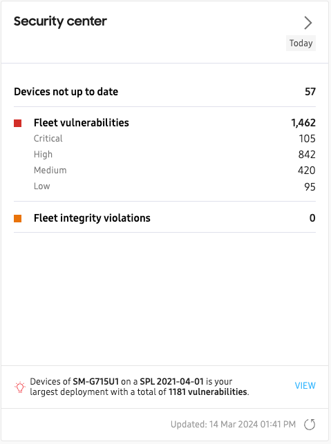
Tile information
The dashboard tile consists of the following:
- Devices not up to date: The total number of devices that are not updated to the latest available security patch level. Click to view the device ID, model, and security patch information for each device.
- Fleet vulnerabilities: The total number of security vulnerabilities affecting your entire fleet, divided into Critical, High, Medium, and Low categories. Click to view vulnerability details for each category.
- Fleet integrity: The total number of devices that failed critical boot-time attestation checks such as Warranty Bit and Trusted Boot. Click to view the device ID, model, and last attestation time for each device.
Notification area
In the notification area, you’ll see the total number of vulnerabilities that affect the largest deployment of devices in your fleet. Click VIEW to see the full list of vulnerabilities for this deployment.
A “deployment” is defined as the unique combination of a specific device model and a corresponding security patch level (SPL). For example, device model SM-G715U1 with patch SPL 2021-04-01 would be one unique deployment, whereas model SM-G715U1 with patch SPL 2022-06-01 would be an entirely different deployment, even though the model number is identical.
Expanded view
The Security center expanded view — which can be accessed either by clicking the > button on the main tile, or by clicking Security in the left navigation pane — provides additional details not found on the main dashboard tile. This is divided into four main sections:
- Summary
- Fleet vulnerabilities
- Fleet integrity
- Vulnerabilities per device model
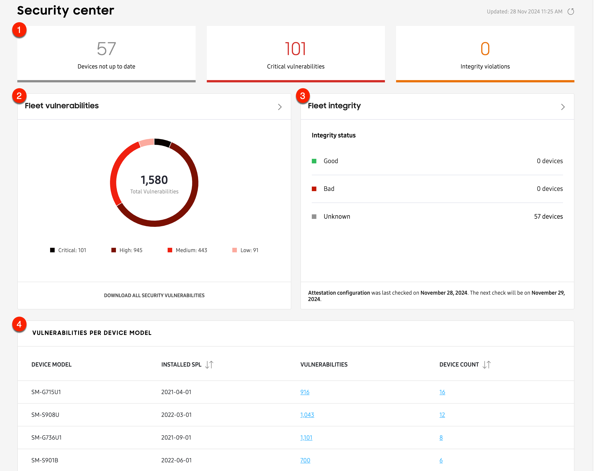
Summary
In the top section you’ll see a summary of your fleet’s security status, including the total number of devices with outdated security patches, total count of critical vulnerabilities, and number of devices with failed a boot-time integrity checks (failed Knox attestation). Click any tile to drill-down further into the data.
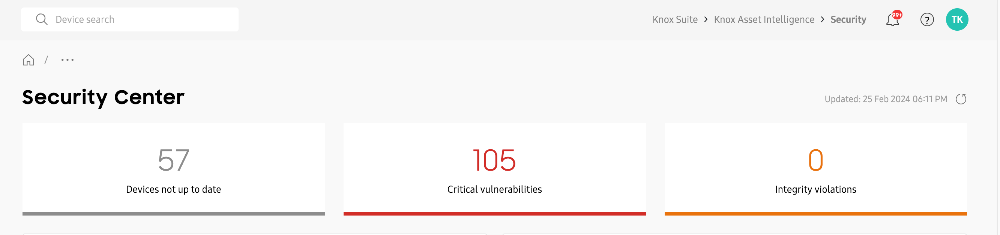
Fleet vulnerabilities
The Fleet vulnerabilities chart provides a breakdown of your fleet’s vulnerability categories (Critical, High, Medium, Low), and provides a total vulnerabilities count per category. Hover over each segment of the chart to get an explanation of the category.
Below the chart, you can click DOWNLOAD ALL SECURITY VULNERABILITIES to review this information in CSV format.
Click any vulnerability category in the chart (Critical, High, Medium, Low) to get a drill-down view of the data, filtered by that category. You can also click the drill-down button (>) to view data for all fleet vulnerability categories.
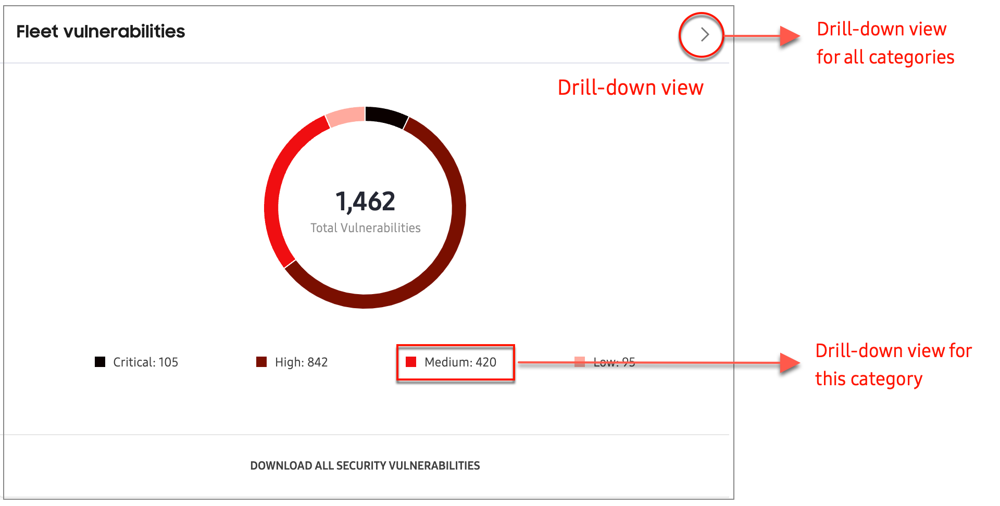
Fleet integrity
Using Knox Attestation, the Fleet integrity chart provides insight into whether your devices have ever installed non-official Samsung software. You can see how many devices have a Good, Bad, or Unknown status. Devices that have failed Knox Attestation receive a Bad status. In the notification section at the bottom of the chart, you’ll see when attestation was last checked, and when the next check will occur.
Click any status in the chart (Good, Bad, Unknown) to get a drill-down view of the data, filtered by that status. You can also click the drill-down button (>) to view data for all fleet integrity statuses.
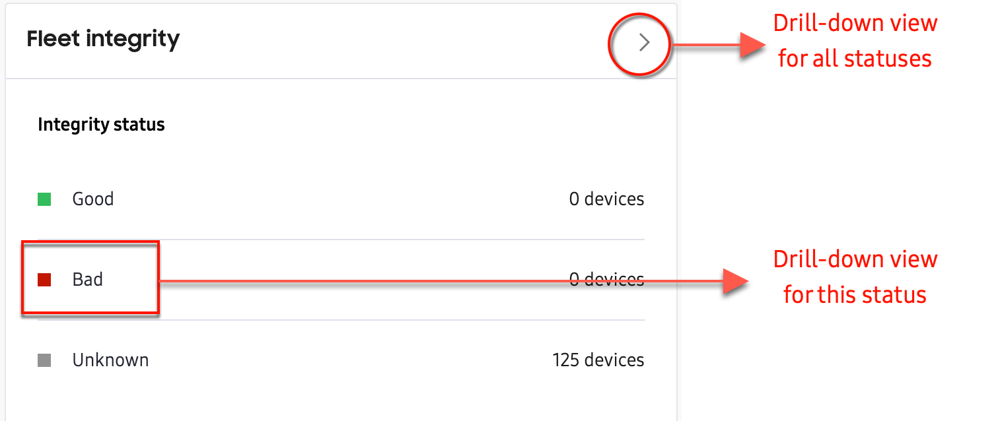
Vulnerabilities per device model
The Vulnerabilities per device model table lets you know the total number of vulnerabilities, and total device count for every unique device deployment (device model and security patch pair) in your fleet.
Click any value in the Vulnerabilities column to get a drill-down view page showing all CVE (Common Vulnerabilities and Exposures) and SVE (Samsung Vulnerabilities and Exposures) reported for that specific deployment.
Click any value in the Device count column to a get list of every device of that specific deployment.
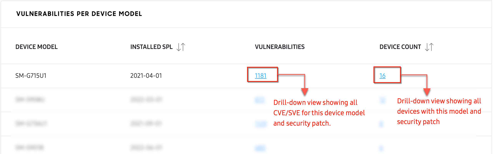
Drill-down views
Summary
The Security center summary provides access to three drill-down view pages:
- Devices not up to date
- Critical vulnerabilities
- Integrity violations
Devices not up to date
Click the Devices not up to date tile to see which devices and device models in your fleet are not updated to the latest security patch. On the drill-down page, you can search for a specific device IMEI, or use the filters to find a specific model or installed security patch date.

Critical vulnerabilities
Click the Critical vulnerabilities tile to see a drill-down view page listing every reported Critical vulnerability in your fleet. This page provides the same information as the drill-down view page for Fleet vulnerabilities (when the Critical filter is applied).
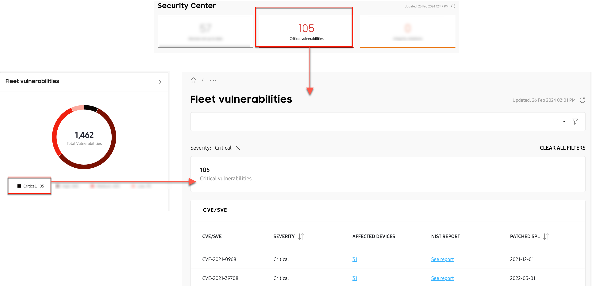
Integrity violations
Click the Integrity violations tile to see a drill-down view page listing every device that failed Knox attestation. This page provides the same information as the drill-down view page for Fleet integrity (when the Bad filter is applied).
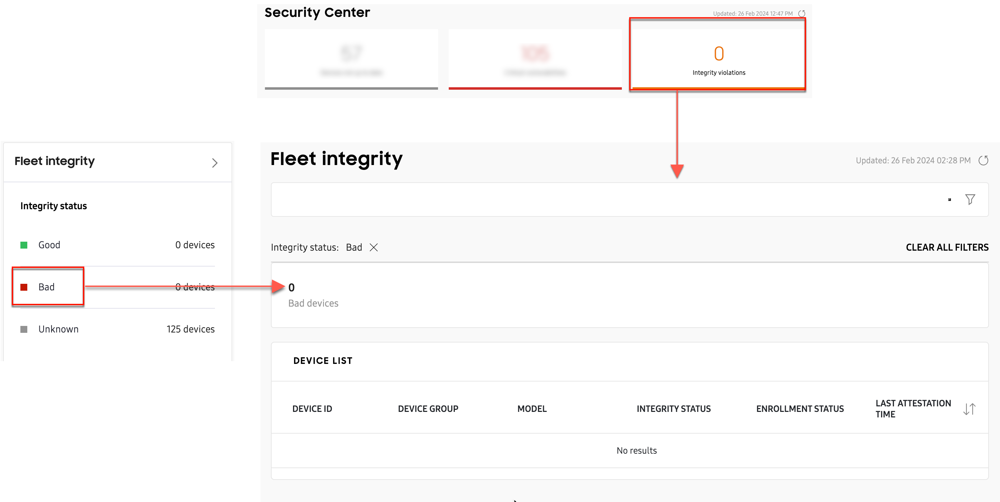
Fleet vulnerabilities
The Fleet vulnerabilities drill-down page provides a breakdown of every CVE (Common Vulnerabilities and Exposures) and SVE (Samsung Vulnerabilities and Exposures) reported in your fleet.
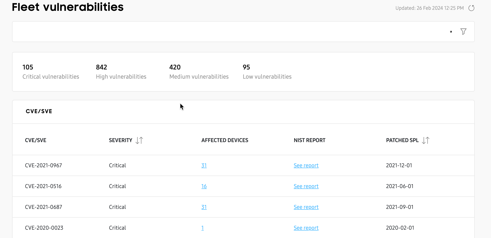
From this page, you can use the search button to find details about a specific vulnerability, or use the filter button to display vulnerabilities for a specific category (Critical, High, Medium, Low). In the AFFECTED DEVICES column, you’ll see the total number of devices affected by a specific vulnerability.
For some vulnerabilities, you’ll also see an info icon next to the device count, accompanied by an asterisk (*) next to the CVE/SVE number. This icon indicates that the CVE or SVE has not yet been fully mapped by the Security center. In other words, the vulnerability was identified by Samsung, but it is still awaiting internal verification, and a patch is not yet available for all devices.
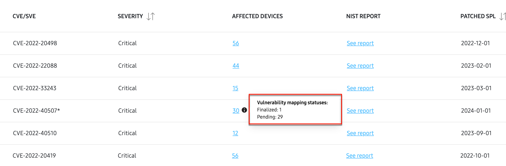
Click the icon to view the Vulnerability mapping status for that particular CVE or SVE. In the pop-up, you’ll see the total number of devices affected by that unconfirmed vulnerability, grouped into two categories:
- Pending: Indicates the total number of devices currently awaiting internal vulnerability verification and security patching.
- Finalized: Indicates the total number of devices that were previously in the Pending status, but a patch has since been made available for that specific device model.
All other vulnerabilities that don’t display an info icon next to the device count are already internally verified, patched, and mapped to known device models.
Click any link in the AFFECTED DEVICES column to view additional details, such as the device IDs and models affected by that specific vulnerability, and when that vulnerability was patched.
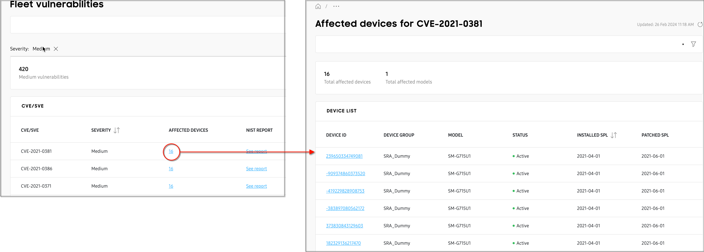
On the Fleet vulnerabilities 1st drill-down view page, click See report in the NIST Report column to go to the National Institute of Standards and Technology (NIST) database. From there, you can view comprehensive details about that vulnerability including its Description, Severity, and Known Affected Software Configurations.
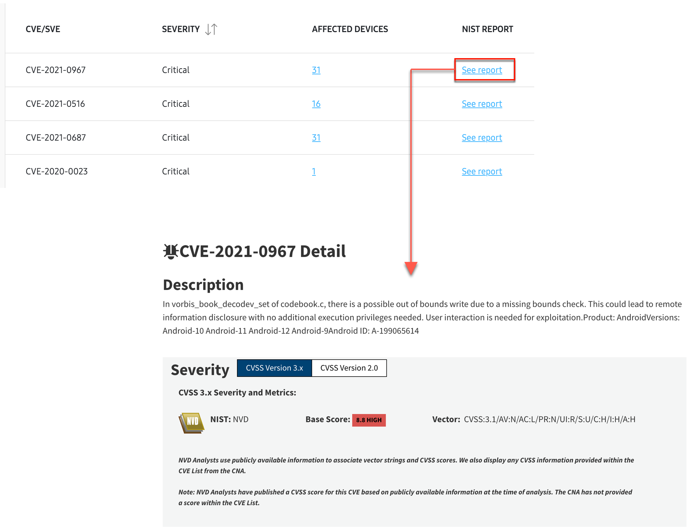
Fleet integrity
The Fleet integrity drill-down view page lets you know the integrity status of every device in the fleet, and when they had their last attestation check. From this page, you can search for a specific device IMEI, or use the filters to find a specific model or installed security patch date.
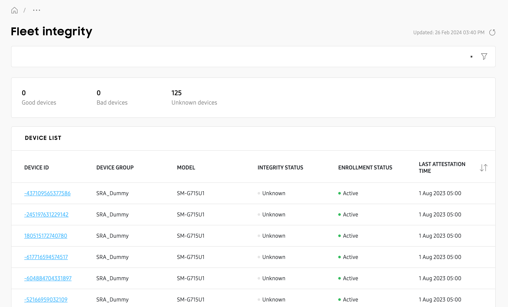
Vulnerabilities per device model
There are two drill-down view pages for Vulnerabilities per device model.
[Model name] vulnerabilities
Click any value in the Vulnerabilities column to see a vulnerabilities drill-down view page for that specific model and security patch (deployment).
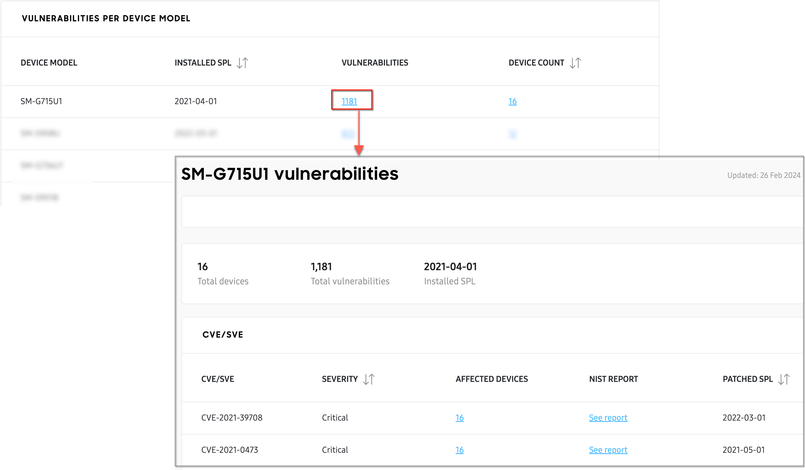
Similar to the drill-down view page for Fleet vulnerabilities, this page will show you every CVE and SVE vulnerability reported for the specific deployment, how many devices are affected per vulnerability, and when that vulnerability was patched.
Click any value in the AFFECTED DEVICES column to see a 2nd drill-down page that lists every device in your fleet with that specific deployment, or click See report in the NIST Report column to get more details about that vulnerability from the NIST database.
Devices not up to date
Click any value in the DEVICE COUNT column to see a list of every device in the fleet belonging to that specific deployment, the group the devices belong to, and their current status. Click a DEVICE ID to view each device’s expanded details in a sliding panel.
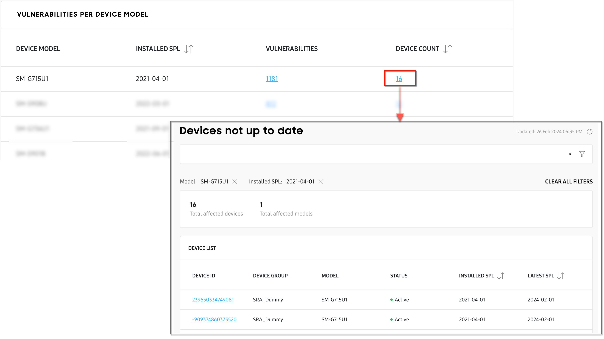
On this page
Is this page helpful?